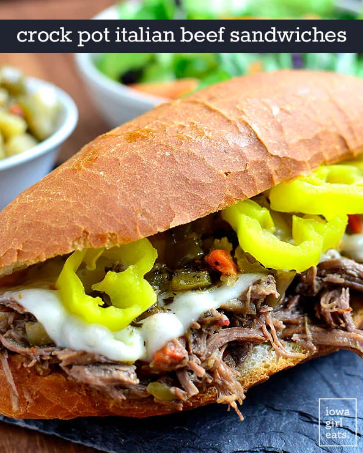

Italian Beef

Description
A mouthwatering, limited - ingredient flavor combo that has just the right amount of zip and zing!
Ingredients
- Italian dressing mix
- Sliced pepperoncinis
- Splash of pepperoncini juice
- Chicago-style Giardiniera
- Chuck roast
- Beef broth
Steps
- Trim fat off roast and cut into pieces to be placed at bottom of crock pot
- Sprinkle in Italian dressing mix
- Add peppers, juice, drained Giardiniera
- Add broth to the top of the roast and cook on low for 9 hours
- Shred roast, and cook in juices for additional hour
- Scoop into hoagies
- Voila! Bon Appetit!